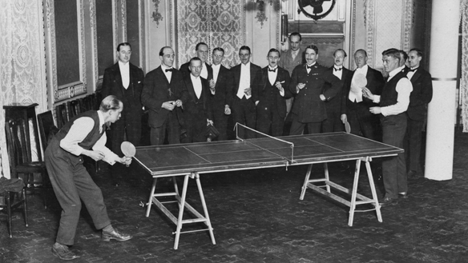

Historia
El tenis de mesa inicialmente fue creado como un juego para pasar el tiempo en tiempos de lluvia en Inglaterra en 1870, a causa de que el campo de tenis de campo no se podía jugar con lluvia o el campo mojado. Así fue como unos jugadores del tenis crearon el maravilloso mundo del Tenis de Mesa.
El deporte desde un principio quería ser infundado en los países para difundir el comunismo en 1949 desde un principio, hubo líderes comunistas como Mao Zedong y Zhou Enlai apoyando el movimiento. Mao decreto que el deporte nacional en China fuera el Tenis de Mesa pero actualmente se ve que es deporte liberal, en el cual existen infinitas posibilidades en un juego; un saque, un rebote, un efecto, un ataque, un levantamiento, etc.

Principios del Tenis de Mesa
Ping Ping
China la cuna del Tenis de Mesa
Actualmente el deporte del Tenis de Mesa es el deporte nacional de este país. El deporte desde un principio quería ser infundado en los países para difundir el comunismo
en 1949 desde un principio, hubo líderes comunistas como Mao Zedong y Zhou Enlai apoyando el movimiento. Mao decreto que el deporte nacional en China fuera el Tenis de Mesa.
Hizo un movimiento para ello, ubicando a un entrenador en cada localidad de china, en busca de niños con reflejos agudos y excelente coordinación de ojo-mano. Y todo esto Montagu, era para “reconectar a China con el mundo”.

El actual campeon olimpico y mundial, ocupa en marzo de 2020 el puesto n°3 del ranking mundial de la Federacion Internacional de Tenis de Mesa
A lo largo de los años, los chinos han dejado huella en el Grand Slam, Juegos Olímpicos,
torneo mundial, etc. Haciendo un promedio entre 75% victorias ganadas en cada campeonato jugado por cada delegación.
Ningún deporte tuvo un dominio tan grande en Juegos Olímpicos como el tenis de mesa por parte de los
chinos, el cual comenzó a disputarse en Seúl 1988. Desde entonces ganaron 16 medallas doradas.
En la temporada de los Juegos Pekín 2008, China tenía los cuatro primeros nombres del ránking mundial masculino (Wang Hao, Ma Lin, Ma Long y Wang Liqin) y los cinco del femenino (Zhang Yining, Guo Yue, Li Liaoxia, Guo Yan y Wang Nan).
Con un máximo de tres jugadores por equipo, era más difícil para un chino conseguir un cupo en la selección de su país que ganar medallas Olímpicas… Los expertos creen que hasta un equipo de reserva de China es capaz de asegurar la misma cantidad
de medallas que el oficial. Como local, China ganó las ocho competencias de tenis de mesa en Pekín 2008: dos oros por equipo y seis individuales. Fue una victoria inédita para un Juego Olímpico.